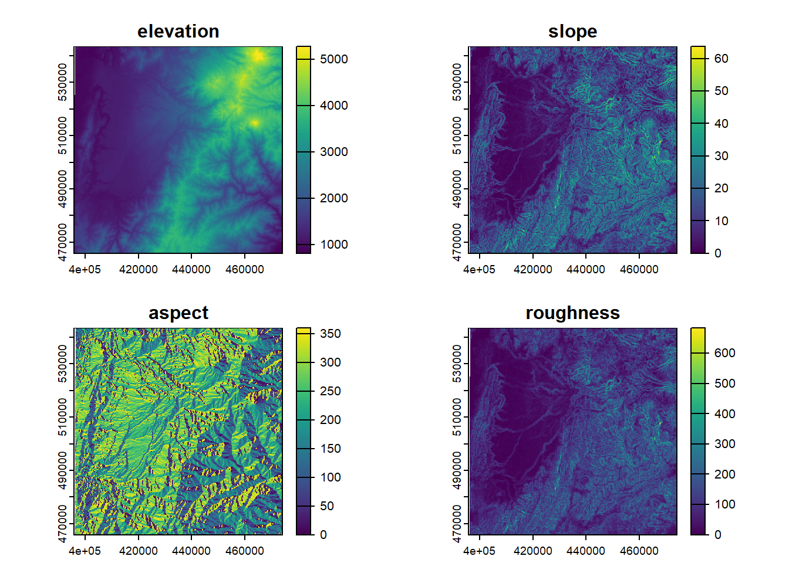
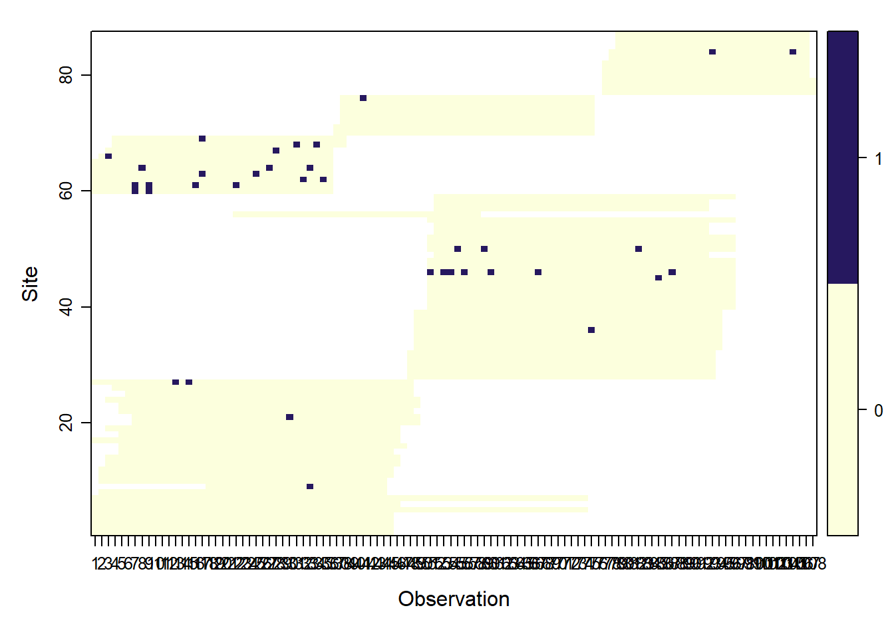

Code
library(mapview)
library(sf)
library(readr) # read csv
library(DT) # tablas en html
library(unmarked)
library(terra)
library(elevatr)Repaso del modelo de ocupación. Practica
Diego J. Lizcano ![]()
Elevation as an occupancy determinant of the little red brocket deer (Mazama rufina) in the Central Andes of Colombia. https://doi.org/10.15446/caldasia.v43n2.85449
Acá evaluamos la influencia de variables del terreno sobre la ocupación del venado soche (Mazama rufina) en los Andes centrales de Colombia. La ocupación aumentó con la elevación hasta los 3000 m y por encima de este valor decrece. Esta información es crucial para predecir los posibles efectos del cambio climático sobre M. rufina y otras especies de montaña.
Comenzamos cargando tres paquetes básicos necesarios para generar mapas; mapview, sf y luego readr para leer los datos y unmarked para los modelos de ocupación.
library(mapview)
library(sf)
library(readr) # read csv
library(DT) # tablas en html
library(unmarked)
library(terra)
library(elevatr)El paquete sf se utiliza para trabajar con datos espaciales y ofrece funciones para leer, escribir y analizar datos espaciales (features en inglés) de una manera sencilla y eficiente. Mapview nos permite visualizar mapas rapidamente en R.
library(maps)# read photo data in object y_full. Columns are days and rows sites
# load("data/y_full.RData") # if you got the repo in hard disk
ydata <- "https://github.com/dlizcano/Mazama_rufina/blob/main/data/y_full.RData?raw=true"
load(url(ydata))
# read camera location
# cams_loc_QR <- read.csv("data/cams_location.csv") # if you got the repo in hard disk
camdata <- "https://raw.githubusercontent.com/dlizcano/Mazama_rufina/main/data/cams_location.csv"
cams_loc_QR <- read_csv(url(camdata))En las columnas de y_full tenemos los dias de muestreo y en las filas cada uno de los sitios donde se instaló una camara trampa.
View(y_full)En la tabla cams_loc_QR tenemos las coordenadas de cada camara.
View(cams_loc_QR)Ahora vamos a usar las coordenadas de cada camara para obtener la elevación, la pendiente y el aspecto.
# convert to sf
cams_loc_QR_sf <- st_as_sf(cams_loc_QR, coords = c("Longitud", "Latitud"), crs = "+proj=longlat +datum=WGS84 +no_defs")
# convert to UTM
cams_loc_QR_sf_utm <- st_transform(cams_loc_QR_sf, "EPSG:32618")
centroid <- c(mean(cams_loc_QR$Longitud), mean(cams_loc_QR$Latitud))
# clip_window <- ext(-75.60 , -75.39, 4.59, 4.81) # extent
# bb <- c(-75.60, 4.59, -75.39, 4.81)
# get spatial data as spatrast
srtm <- rast(get_elev_raster(cams_loc_QR_sf_utm, z=9))
# crop the raster using the vector extent
srtm_crop <- srtm #terra::crop(srtm, clip_window)
# elevation.crop and terrain covs
elevation <- srtm_crop
slope<-terrain(srtm_crop, "slope", unit='degrees', neighbors=8)
aspect<-terrain(srtm_crop, "aspect", unit='degrees', neighbors=8)
roughness <- terrain(srtm_crop, "roughness", neighbors=8)
cov.list<-list(elevation, slope, aspect, roughness)
cov.stack<-rast(cov.list)
names(cov.stack) <- c("elevation", "slope", "aspect", "roughness" )
plot(cov.stack)
# extract covariates
cam_covs <- terra::extract (cov.stack, cams_loc_QR_sf_utm)
full_covs <- as.data.frame(cam_covs) # convert to Data frame
full_covs_1 <- scale(full_covs)
full_covs_s <- as.data.frame(full_covs_1)
full_covs_s$camara <- cams_loc_QR$camara # add camera name
datatable(full_covs_s)#############
# Occu analisys
# Make unmarked frame
umf_y_full<- unmarkedFrameOccu(y= y_full[,1:108])
siteCovs(umf_y_full) <- full_covs_s # data.frame(Elev=full_covs$Elev) # Full
#######Graficar umf
plot(umf_y_full)
Esperamos que haya disfrutado de este curso.
Recuerde que la práctica es fundamental para desarrollar sus habilidades de R, por lo que le recomendamos que intente hacer de R una parte integral de sus flujos de trabajo. Afortunadamente, con la abundancia de recursos disponibles gratuitamente y la inmensa comunidad de usuarios, ¡aprender R nunca ha sido tan fácil!
Escribir código consiste en ensayo error y un 90% buscar la respuesta en Google.
Si busca un problema en la web, como “ggplot remove legend”, normalmente obtendrá una respuesta bastante decente en Stack Overflow o en un sitio similar.
Si la respuesta aún no existe en línea, regístrese en Stack Overflow y pregúntela usted mismo (pero primer dedique tiempo suficiente en buscar … ¡nadie quiere ser etiquetado por duplicar una pregunta existente!).
Otra buena idea es buscar un grupo de apoyo local. El uso de R es una experiencia emocional, la curva de aprendizaje al comienzo es bien empinada, la frustración es común, pero luego de un tiempo la alegría de encontrar una solución puede ayudarnos a persistir. Tener a otras personas para ayudar, o simplemente escuchar sus frustraciones es una gran motivación para seguir aprendiendo R.

pkgs <- cite_packages(output = "paragraph", pkgs="Session", out.dir = ".")
# knitr::kable(pkgs)
pkgsWe used R version 4.4.2 [@base] and the following R packages: DT v. 0.33 [@DT], elevatr v. 0.99.0 [@elevatr], maps v. 3.4.2.1 [@maps], mapview v. 2.11.2 [@mapview], sf v. 1.0.19 [@sf2018; @sf2023], terra v. 1.8.21 [@terra], tidyverse v. 2.0.0 [@tidyverse], unmarked v. 1.4.3 [@unmarked2011; @unmarked2023].
print(sessionInfo(), locale = FALSE)R version 4.4.2 (2024-10-31 ucrt)
Platform: x86_64-w64-mingw32/x64
Running under: Windows 10 x64 (build 19045)
Matrix products: default
attached base packages:
[1] stats graphics grDevices utils datasets methods base
other attached packages:
[1] maps_3.4.2.1 elevatr_0.99.0 terra_1.8-21 unmarked_1.4.3
[5] DT_0.33 readr_2.1.5 sf_1.0-19 mapview_2.11.2
[9] grateful_0.2.10
loaded via a namespace (and not attached):
[1] bslib_0.8.0 xfun_0.49 raster_3.6-30 htmlwidgets_1.6.4
[5] lattice_0.22-6 tzdb_0.4.0 vctrs_0.6.5 tools_4.4.2
[9] crosstalk_1.2.1 curl_6.0.0 stats4_4.4.2 parallel_4.4.2
[13] tibble_3.2.1 proxy_0.4-27 pkgconfig_2.0.3 KernSmooth_2.23-24
[17] satellite_1.0.5 leaflet_2.2.2 lifecycle_1.0.4 compiler_4.4.2
[21] progress_1.2.3 munsell_0.5.1 codetools_0.2-20 sass_0.4.9
[25] htmltools_0.5.8.1 class_7.3-22 yaml_2.3.10 jquerylib_0.1.4
[29] pillar_1.10.1 crayon_1.5.3 MASS_7.3-61 slippymath_0.3.1
[33] classInt_0.4-10 cachem_1.1.0 tidyselect_1.2.1 digest_0.6.37
[37] purrr_1.0.2 fastmap_1.2.0 grid_4.4.2 colorspace_2.1-1
[41] cli_3.6.3 magrittr_2.0.3 base64enc_0.1-3 leafem_0.2.3
[45] e1071_1.7-16 prettyunits_1.2.0 scales_1.3.0 sp_2.1-4
[49] bit64_4.5.2 httr_1.4.7 rmarkdown_2.29 bit_4.5.0.1
[53] progressr_0.15.0 png_0.1-8 hms_1.1.3 evaluate_1.0.1
[57] knitr_1.49 rlang_1.1.4 Rcpp_1.0.13-1 glue_1.8.0
[61] DBI_1.2.3 rstudioapi_0.17.1 vroom_1.6.5 jsonlite_1.8.9
[65] R6_2.6.1 units_0.8-5 @online{j._lizcano2026,
author = {J. Lizcano, Diego},
title = {Repaso Del Modelo de Ocupación. {Practica}},
date = {2026-12-06},
url = {https://dlizcano.github.io/occu_multi_season/},
langid = {en}
}